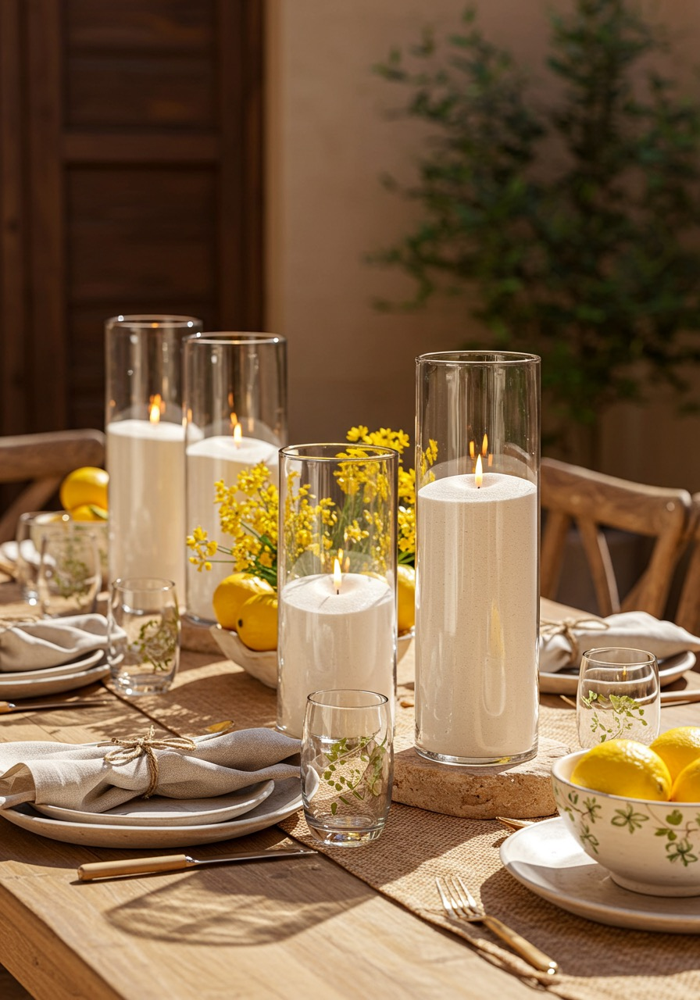

DIY Wedding Candles: What’s Actually Worth Doing Yourself?
April 19, 2026
DIY wedding candles can absolutely be worth it. For many couples, the sweet spot is not doing everything from scratch. It is choosing the parts that feel creative and manageable, then keeping the rest as simple as possible.
If you are trying to save money, stay hands-on, and still protect your sanity in the lead-up to the wedding, it helps to think about DIY in a practical way. Some parts of candle styling are well worth taking control of. Other parts can create a lot of extra work without adding much to the final result.
Want to keep it practical? You can check your date and get a quote here.
Why couples choose DIY wedding candles
There are plenty of good reasons couples lean towards DIY candle styling, and most of them are very sensible.
Saving money: DIY can help you control spending, especially if you are making thoughtful choices about quantity and setup.
Creative control: Some couples simply want to decide how the tables look and where the candles go.
A personal touch: Styling your own candles can make the setup feel more like you, rather than something generic.
Flexibility: DIY can make it easier to adapt the candle layout around your flowers, signage, and overall styling plan.
None of that is unrealistic. DIY often works well when it is built around a plan, not pressure.
What is usually worth DIYing
For most weddings, the parts that are worth DIYing are the parts that let you shape the final look without creating too much extra admin.
Choosing the candle quantity: You know your venue, tables, and styling priorities best, so this is often a worthwhile decision to make yourself.
Deciding where the candles will go: Guest tables, sweetheart table, cake table, welcome sign, bar, or other feature areas can all be planned around your priorities.
Styling the tables on the day: If you enjoy arranging details, this can be one of the most satisfying DIY parts.
Mixing candles with flowers or decor you already have: Candles often work beautifully when layered with styling pieces you have already chosen.
Creating your own layout with ready-to-light candles: This gives you creative control without needing to prep every candle from scratch.
If you are still deciding on quantity, our guide on how many candles you might need for a wedding can help you plan it more clearly.
What is usually not worth overcomplicating
This is where DIY can start to become stressful rather than helpful. A lot of couples do not mind the styling side, but the extra sourcing, prep, and logistics can be what pushes things over the edge.
Trying to source lots of mismatched candles yourself: This can take more time than expected, especially if you want the final look to feel cohesive.
Filling or prepping candles from scratch: This sounds manageable until it turns into another major job in the weeks before the wedding.
Underestimating setup and pack-down time: Even a simple candle layout takes time when you are doing it properly across multiple tables.
Forgetting transport and return logistics: Candles still need to be collected, moved safely, and returned without becoming a last-minute headache.
Trying to make everything perfect at the last minute: This is often where DIY stops feeling enjoyable and starts feeling stressful.
A smarter DIY approach
For many couples, the smartest DIY option is to keep the creative control but strip out the parts that create unnecessary mess, prep, and admin.
Lustre Hire is a DIY candle hire business in Perth, with pickup from Bull Creek. Our candles come pre-filled and ready to light, so couples can handle pickup, setup, styling, and return themselves while skipping the more time-consuming prep side. After return, Lustre Hire handles the cleaning.
That kind of setup can be a good middle ground. You still get to DIY the styling decisions and the on-the-day placement, but you are not taking on every possible step from scratch.
Questions to ask yourself before DIYing more
If you are deciding how much to DIY, this short checklist can help:
• Do I have time to set this up properly?
• Am I trying to save money, or am I creating extra work?
• Do I know how I am transporting everything?
• Will I still feel okay doing this the day before the wedding?
• Could I keep the look I want while simplifying the process?
Those questions usually tell you quite quickly whether a DIY idea is genuinely helping or just adding stress.
Keeping the process manageable
One of the best ways to keep DIY enjoyable is to be realistic about what happens before and after the wedding, not just how the tables will look in photos.
If you want a better sense of the practical side, you can read more about how it works and what happens at return on our How to Return page.
If you are also weighing up the logistics side, our post on whether wedding candles fit in a normal car can help with pickup planning too.
Final reassurance
You do not need to do every part of wedding candle styling yourself for it to still count as DIY. In many cases, the best results come from DIYing the parts that matter most to you and simplifying the rest.
If you want a setup that feels creative but manageable, the next step is to check your date, get a quote, and plan a candle layout that fits your wedding without creating unnecessary stress.
Ready to keep it simple?
Check your date, get a quote, and plan a candle setup that still feels hands-on and manageable.
Check Availability